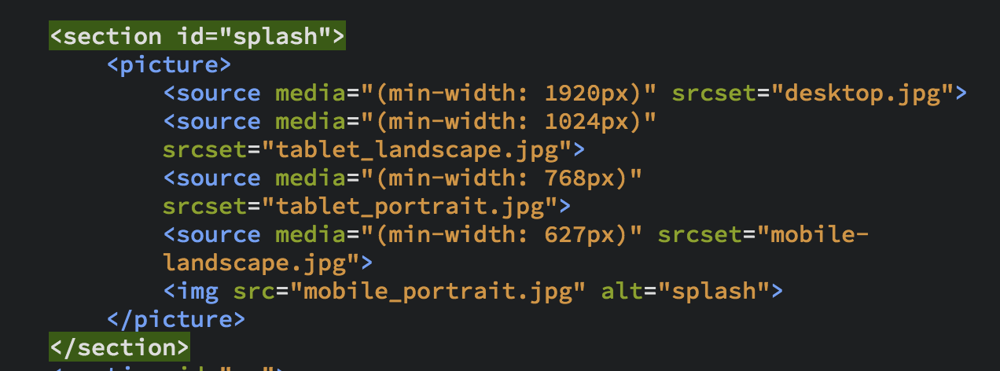

Kort beskrivelse
I dette tema har jeg lært hvordan man basalt strukturere, layouter og navngiver både html og css filer, samt at kommentere på koden. Jeg har også lært hvordan man ved brug af css kan udpege elementer i html ved hjælp af (class og id) som man kan style på. Hvilket jeg har gjort meget brug af i min endelige typografi-hjemmeside.
Desuden har jeg fået grundlæggende viden om måleenheder, farver, web-fonte, margin, padding, bredde, højde, Hvilket har hjulpet mig blandt andet med at Definere de rigtige størrelser, jeg vil have, samt hvad for nogle typografier og farver jeg Endte med at bruge.
For eksempel endte jeg med at bruge en frisk og streetart agtig sans serif typografi til mine overskrifter, og en mere læsbar typografi i min brødtekst med seriffer. Hvis jeg ikke havde haft viden om typografier havde jeg nok bare brugt den skrifttype som så mest "Street" ud i både brødtekst og overskrifter.

Desuden lærte jeg også noget vigtigt om at tekst er mere læsbart hvis de er opdelt i koloner der hverken er for lange eller korte. Dette var jeg dog ikke i stand til at ændre på i dette forløb, da mine kodeevner var meget begrænsede på dette tidspunkt.
En vigtig ting jeg også lærte i dette forløb var at designe til web på forskellige devices (desktop, tablet og mobil) ved hjælp af “Breakpoints” og “Srcset”.
